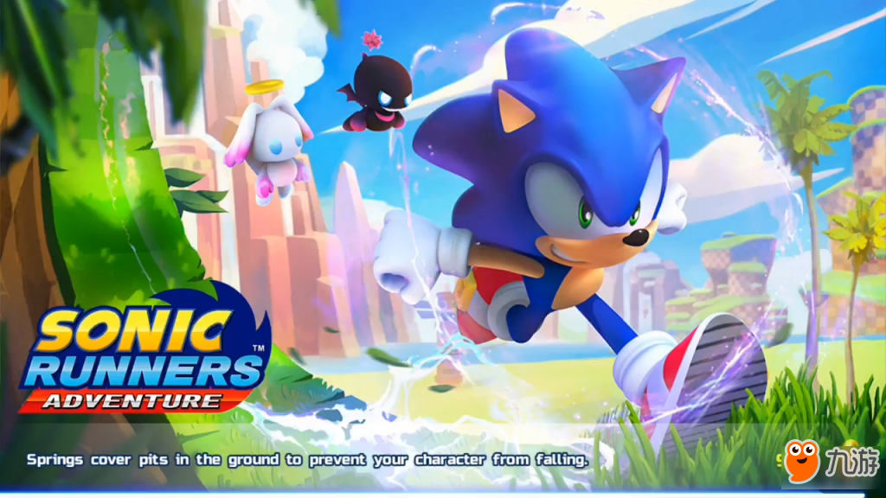
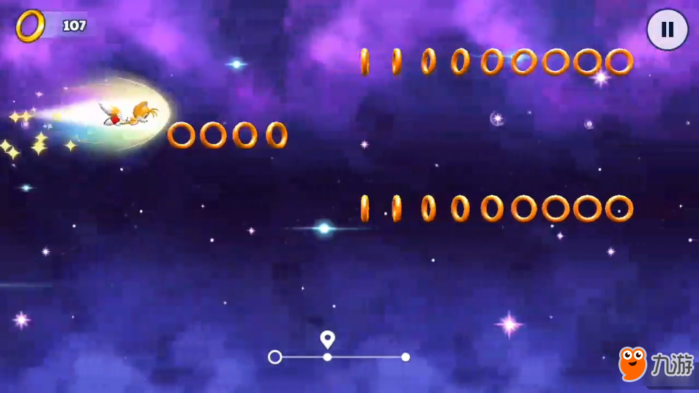

“音速鼠”索尼克可以说是日本著名游戏厂商世嘉旗下众多的游戏角色当中人气最高的角色之一了，甚至可以称之为世嘉的代表人物之一，原本游戏就已经在多平台当中和玩家们见面，而随着移动平台的兴起，世嘉也没有让这个经典的休闲游戏错过这个焕发活力的平台，此前世嘉已经在移动平台上推出过多款索尼克系列游戏作品。而此前九游曾经报道一款名为《索尼克跑酷大冒险(Sonic Runners Adventure)》的全新游戏，而此作将会有著名游戏厂商Gameloft进行制作，也让本作被不少玩家所关注。
不过关于这款游戏的信息却一直是知之甚少的，而且官方似乎也并不愿意透露给大众更多的消息，然而近日有玩家发现这款游戏已经悄然在部分地区的Gameloft自家的网页商店当中上架了，目前上架官方商店的只是游戏的免费版本，从网页上的信息来看目前的版本大小仅为16.08MB，应该不是游戏的完整版本，或许在进入游戏之后玩家还需要下载大量的数据才可以体验游戏内容，不过这些暂时都并未得知。手中有Android设备的玩家可以尝试一下。虽然游戏目前并未正式推出，而且也仅仅是在官方自己的商店当中上架，但是可以看出游戏的完成度应该是非常高了，或许玩家们在不久之后即可在移动平台上体验到这款游戏，对于本作感兴趣的玩家可以关注九游的相关后续报道。
